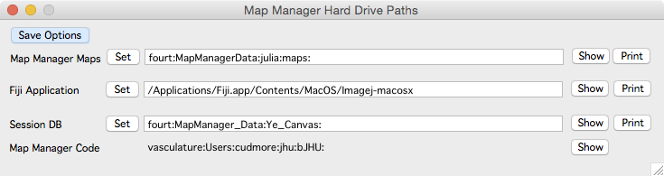

Hard Drive Paths

Open the Hard Drives Path Panel using the main menu ‘MapManager - Hard Drive Paths’.
Save Options Button
Save the options. Saved options will be loaded next time Map Manager is run. This is the same as the ‘Save Options’ button in the main options panel.
Map Manager Maps
Location to load and save maps. This defaults to ‘My Documents’ on Windows and ‘Documents’ on OS X.
Fiji Application
Location of Fiji application. Used when creating line segments.
- On Windows, something like C:\Users\cudmore\apps\Fiji.app\ImageJ-win64.exe
- On Mac, something like /Users/cudmore/Fiji.app/Contents/MacOS/ImageJ-macosx
Session DB
Advanced:Location of your session DB folder if using the mp285 Canvas
Map Manager Code
Shows the hard-drive path that Map Manager was loaded from. Useful if there are multiple Map Manager installations on one computer.